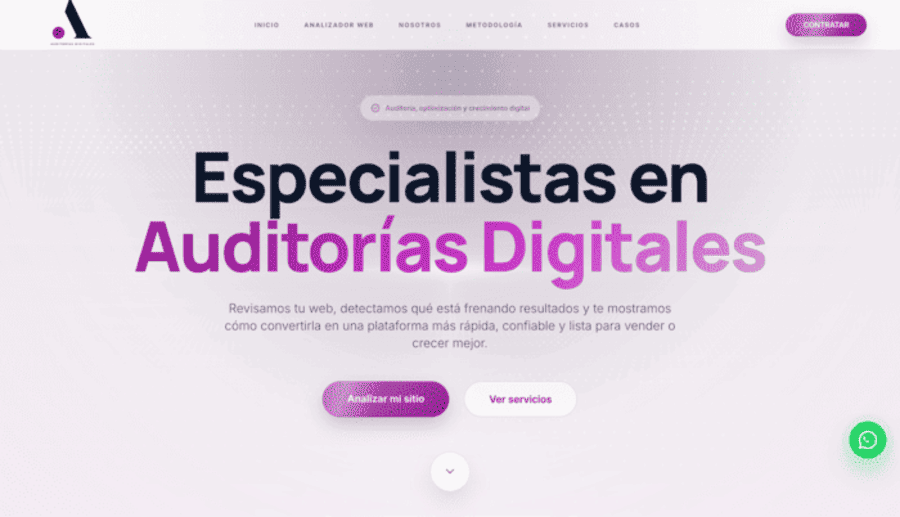
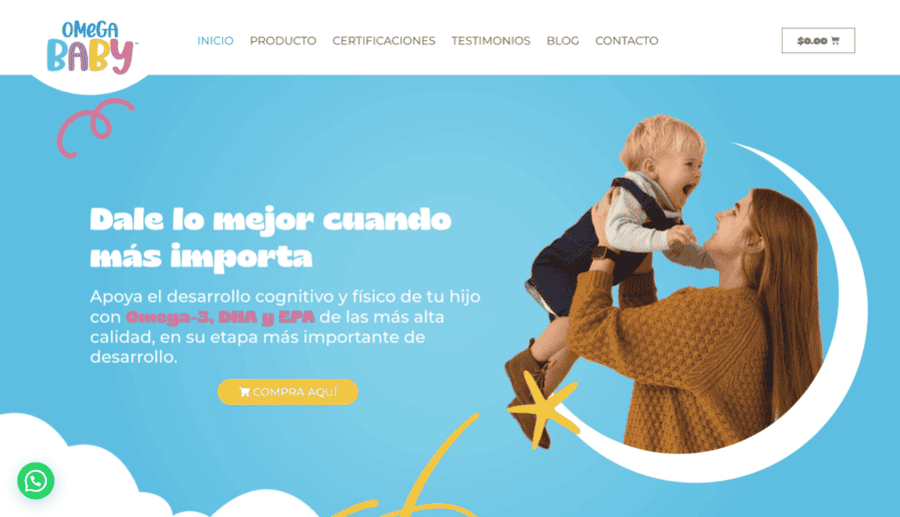
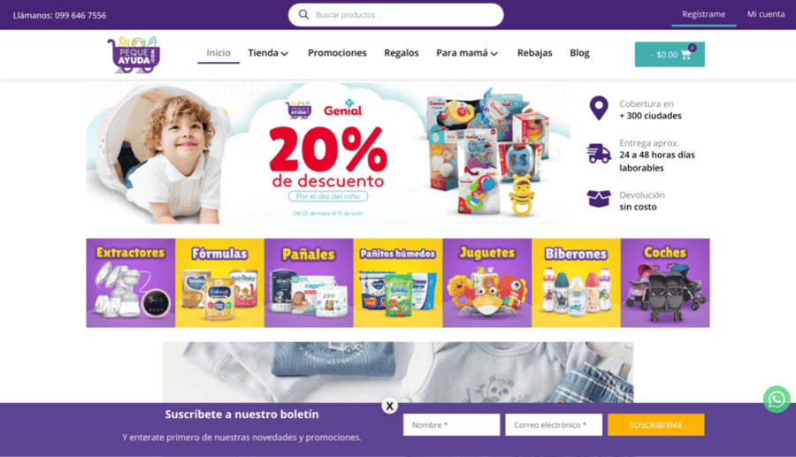
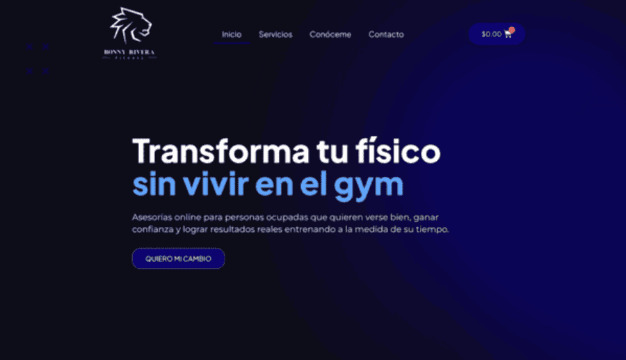
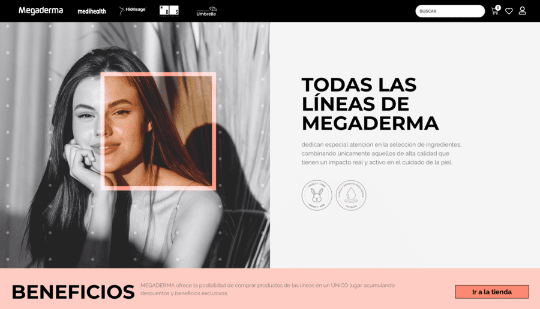

DRUPAL & WORDPRESS
Desarrollo Drupal y WordPress para portales institucionales, sitios corporativos y administración de contenido escalable.
Desarrollo web con IA: sitios Drupal y WordPress, tiendas Shopify, plugins e integraciones que resuelven necesidades reales.
Desarrollo Drupal y WordPress para portales institucionales, sitios corporativos y administración de contenido escalable.
Tiendas Shopify y ecommerce preparadas para vender, crecer y facilitar la operación diaria.
Automatizaciones, asistentes e integraciones con inteligencia artificial aplicadas a sitios web, ecommerce y procesos de negocio.
Sistemas web a medida en PHP, plugins e integraciones enfocados en procesos y objetivos de negocio.
Una selección de proyectos web, ecommerce y portales publicados en mi perfil profesional.





Soy Jonathan Díaz Policarpio, desarrollador web especializado en Drupal, WordPress, Shopify y desarrollo web con inteligencia artificial.
He participado en sitios institucionales, plataformas corporativas y ecommerce para organizaciones de distintos sectores. Desarrollo plugins, módulos e integraciones con IA, colaboro con equipos técnicos y cuido rendimiento, SEO técnico y experiencia de usuario desde la implementación.
Conferencias, proyectos, viajes y momentos que también forman parte de mi forma de crear.
Trabajo con CMS y ecommerce consolidados, y aplico inteligencia artificial para acelerar el desarrollo y automatizar procesos. Mi objetivo es entregar soluciones web mantenibles, escalables y útiles para empresas y marcas.
Si buscas desarrollar una landing, sitio web, ecommerce o sistema web, conversemos.
Integro inteligencia artificial en el proceso de desarrollo web para prototipar más rápido, revisar código, automatizar contenido, conectar APIs y mejorar flujos internos sin sacrificar calidad ni mantenibilidad.
Desarrollo landing pages, sitios corporativos, portales institucionales, ecommerce, plugins, módulos, integraciones con IA y sistemas web para empresas, marcas y equipos.
Sí. Uso Drupal para portales robustos, WordPress para sitios administrables y plugins, y Shopify para tiendas online orientadas a venta.
Sí. Creo funcionalidades específicas, conecto plataformas con servicios externos e integro APIs cuando las herramientas estándar no cubren la necesidad del proyecto.
Sí. Puedo integrarme a equipos de desarrollo, diseño o negocio, trabajar por entregables y documentar decisiones técnicas para facilitar el mantenimiento.
Escríbeme por correo o LinkedIn con el contexto, objetivos y alcance inicial. Revisamos prioridades, alcance y el siguiente paso más útil para tu proyecto web.